| year | fireId | area_plan_m2 | area_m2 | iterations | coord_x | coord_y | n_trees | n_trees_died | basalArea_total | basalArea_died | psme_died | avgFuel_kg_ha | windSpeed | windDirection |
|---|---|---|---|---|---|---|---|---|---|---|---|---|---|---|
| 6 | 1 | 9355921 | 9359200 | 95 | 7390 | 8810 | 1106699 | 1064982 | 2388.6883 | 2298.610 | 0 | 39755.37 | 17.67204 | 187.2722 |
| 11 | 2 | 10613320 | 10667600 | 105 | 18030 | 23030 | 535890 | 514951 | 2157.1445 | 2067.686 | 0 | 55101.33 | 16.16441 | 254.2023 |
| 18 | 3 | 66038024 | 66571200 | 256 | 20110 | 11130 | 9971141 | 8522890 | 62771.2287 | 53269.425 | 0 | 43763.40 | 12.09752 | 197.0730 |
| 37 | 4 | 13235234 | 13236000 | 105 | 16010 | 8770 | 1722762 | 1362931 | 15451.4867 | 11253.633 | 0 | 40959.27 | 23.64123 | 268.0712 |
| 49 | 5 | 62118545 | 62408800 | 249 | 7630 | 2990 | 6223445 | 4654781 | 82294.3472 | 55315.312 | 0 | 45441.38 | 23.28553 | 235.8422 |
| 79 | 6 | 153096650 | 153714800 | 383 | 4110 | 14530 | 13023363 | 9126662 | 219533.7647 | 126019.528 | 0 | 43652.15 | 13.33987 | 254.2933 |
| 93 | 7 | 1258524 | 1277600 | 34 | 22990 | 13390 | 141322 | 99230 | 2471.1608 | 1493.027 | 0 | 29401.03 | 11.58742 | 200.6049 |
| 101 | 8 | 17526161 | 17739600 | 129 | 1450 | 14410 | 517573 | 397160 | 6548.2361 | 2715.915 | 0 | 32069.33 | 27.12384 | 260.0029 |
| 113 | 9 | 23251611 | 23413600 | 151 | 15850 | 6210 | 1705366 | 1193239 | 34838.5227 | 19189.206 | 0 | 42169.49 | 25.58756 | 233.4567 |
| 115 | 10 | 1981966 | 2008400 | 39 | 1210 | 13970 | 66117 | 50832 | 683.4222 | 229.551 | 0 | 16211.83 | 15.73365 | 239.5789 |
| 127 | 11 | 24433818 | 24488400 | 151 | 1970 | 19310 | 1130352 | 896409 | 15474.3118 | 8279.242 | 0 | 51011.59 | 13.86956 | 257.5287 |
| 128 | 12 | 3461822 | 3543600 | 60 | 6130 | 6090 | 520249 | 365378 | 7815.2903 | 4422.803 | 0 | 19316.17 | 18.26541 | 228.5157 |
| 155 | 13 | 42209881 | 42216000 | 242 | 530 | 14930 | 3168223 | 2320287 | 51250.5543 | 23932.379 | 0 | 38331.30 | 24.37498 | 207.2945 |
| 170 | 14 | 30183070 | 30241600 | 158 | 5810 | 20370 | 1348460 | 1133645 | 19465.7227 | 11652.611 | 0 | 55874.93 | 15.20795 | 216.0514 |
| 186 | 15 | 3774943 | 3904400 | 56 | 4230 | 7330 | 280457 | 190965 | 5742.5958 | 2823.583 | 0 | 36889.62 | 16.33519 | 263.5800 |
| 186 | 16 | 14987103 | 15212000 | 109 | 4130 | 13010 | 1636544 | 1228222 | 23955.1826 | 9779.148 | 0 | 24929.67 | 29.18820 | 191.5560 |
| 192 | 17 | 6080132 | 6218400 | 75 | 19730 | 3030 | 556809 | 391779 | 11443.7747 | 5326.691 | 0 | 29748.50 | 12.43170 | 240.7054 |
| 196 | 18 | 82774479 | 82817600 | 279 | 8770 | 5230 | 6073521 | 4301367 | 126098.1813 | 62908.374 | 0 | 35699.13 | 13.31725 | 183.1845 |
| 205 | 19 | 42031808 | 42087200 | 211 | 7830 | 22150 | 1186354 | 971450 | 18140.2053 | 8789.391 | 0 | 54178.54 | 24.14464 | 190.5515 |
| 206 | 20 | 4759821 | 4852800 | 72 | 14530 | 14770 | 292863 | 223986 | 5391.1960 | 2530.305 | 0 | 40919.96 | 22.24638 | 188.9378 |
| 209 | 21 | 27161911 | 27330000 | 161 | 10550 | 7650 | 2228298 | 1700506 | 24846.2545 | 11125.712 | 0 | 22243.74 | 11.80762 | 219.2560 |
| 229 | 22 | 86507214 | 86949600 | 319 | 1650 | 7350 | 8545906 | 6381659 | 114956.2688 | 54858.865 | 0 | 35720.83 | 24.34829 | 214.7623 |
| 255 | 23 | 6448735 | 6564000 | 73 | 21630 | 10610 | 407364 | 325927 | 6143.1676 | 2588.093 | 0 | 38903.49 | 11.11992 | 232.8224 |
| 273 | 24 | 74646095 | 74958000 | 259 | 6330 | 5730 | 9639587 | 7044859 | 129629.1524 | 70688.719 | 0 | 29775.69 | 11.04457 | 205.9398 |
| 288 | 25 | 12147746 | 12311200 | 111 | 14110 | 4930 | 691252 | 496647 | 14124.9318 | 5887.714 | 0 | 42145.70 | 17.91752 | 257.8751 |
| 290 | 26 | 61986520 | 62263200 | 235 | 6130 | 7250 | 13305606 | 10319713 | 92403.2798 | 47632.022 | 0 | 16508.43 | 27.38842 | 235.8599 |
| 291 | 27 | 6288371 | 6466800 | 81 | 21630 | 7530 | 417439 | 322173 | 6507.2185 | 2719.114 | 0 | 40083.61 | 25.11454 | 264.0305 |
What are the patterns of reburning in iLand?
As part of my NSF Postdoc fellowship, I’ve been working on modeling herbivores in iLand using the biotic disturbance model BITE. In particular, I want to understand if biotic disturbances generally (and herbivores specifically) can interact with fire such that they modify forest composition or forest carbon at a landscape scale.
The following analysis started as an aside: I wanted to filter my simulation results to find modeled stands regenerating after fire so that I could compare age-growth relationships to those found in exclosure and other empirical studies of herbivory.
Fire output in iLand
Determining which fires in iLand were stand-replacing
First, I need to determine which fires in my iLand run were “stand-replacing” -
The fire output in iLand produces a table of each fire, shown below.
There’s two ways to represent fire severity using this output: the proportion of trees killed within each fire, and the proportion of basal area killed. Those two metrics are distinct in slight yet important ways - a fire might kill all trees in a young stand but if the trees themselves were small, the impact on basal area won’t be terribly large. Or, a fire might kill only the largest/oldest individuals in a stand, thus impacting carbon greatly in a way that wouldn’t show up using just proportion of trees killed. Here, since we’re interested in how forests are regenerating, I’ll focus on instances where fires killed all trees, but I’ll show both for the sake of it.
# drop the fire years where there was no burn
fire <- fire[fire$area_m2 > 0,] # no fire years with no burn
length(unique(fire$fireId)) # how many fires occurred across the simulation?[1] 27 fire <- fire %>%
mutate( # how many trees were killed?
prop.dens.killed = n_trees_died / n_trees,
# what basal area was killed?
prop.ba.killed = basalArea_died / basalArea_total)
fire$prop.ba.killed[fire$basalArea_total == 0] <- 0 # set to 0
fire$prop.dens.killed[fire$n_trees == 0] <- 0However, there’s one challenge with this. Here’s the percent of stems killed across fires:
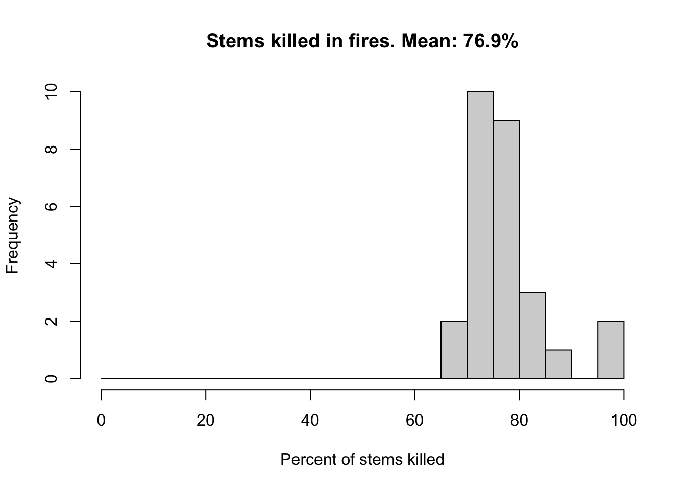
And here’s the percent basal area killed across all fires:
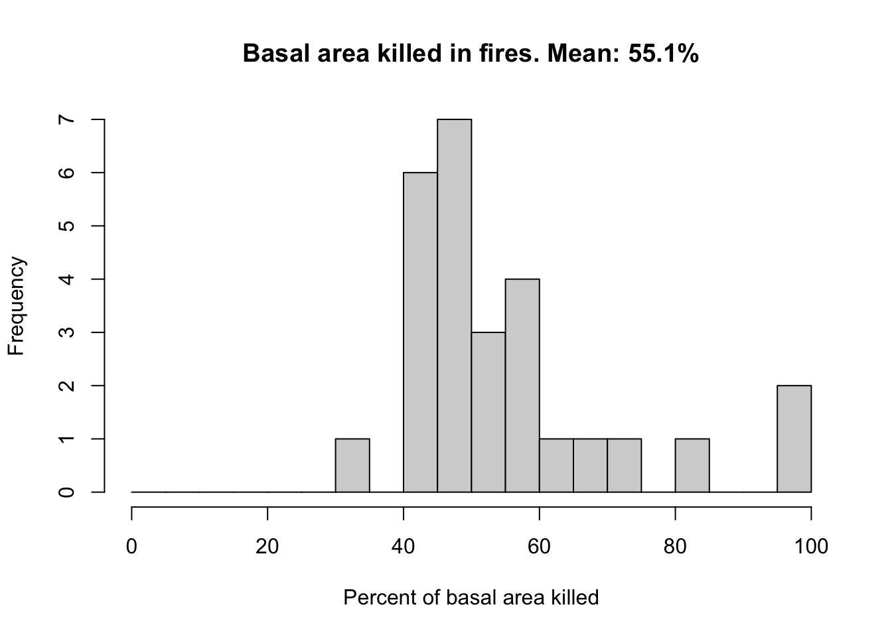
You’ll notice neither metric shows values that are completely equal to 100%. At first this seems like a problem, right?1
1 none of our fires were stand-replacing??
This is an important nuance of the iLand fire output - n_trees_killed and basalArea_died are aggregated across the entire fire. Cells within the fire may have experienced full canopy mortality, but since we’re working with averages, it’ll be very very rare (if not impossible) for a stand to have 100% of stems killed across the entire fire.
Saving additional fire output
I’ll need more detail, and thankfully there’s a fun way to solve this - by adding a javascript file to the scripts folder, you can add code that tells iLand to save raster files of the perimeter of each fire with additional information. Some options of things to turn on include:
- crownKill: fraction of the crown killed within a burned resource unit (see wildfire ).
- diedStemsFrac: fraction of killed trees within a burned resource unit
- diedBasalArea: basal area (sum over resource units) of burnt trees.
- KBDI: Keetch Byram Drought Index (see wildfire ).
- baseIgnition: base probability of an annual fire ignition event for a cell on RU level (depending on fire-return-interval and average fire size)
- fuel: burned fuel (forest floor + dwd) kg/ha
- combustibleFuel: “available combustible fuel (current KBDI, forest floor + dwd) kg/ha
- nFire: cumulative count of fire events on a resource unit2
- lastFireYear: simulation year of the last fire event on a RU
2 Breaking the forth wall: discovered this output while putting together this quarto document. In future runs, I’ll turn this on and avoid some of the steps described later in the document to filter out reburns
3 Note that this is trees killed within burned resource units, not saplings. It still works for our purposes for a few reasons:
- The likelihood that saplings survive in a burned resource unit where all trees are killed seems low (but I can go ahead and check later on)
- Since I’m interested in height-growth relationships, I’ll be filtering out saplings with ages older than the time since fire for the resource unit, so I should catch any that slip through (again, even if they do)
For this analysis, I’ll stick to diedStemsFrac - the number of trees killed within a resource unit3. First, you need to add a function into your iLand model to tell it to save the extra output.
The code to do so is the following:
function afterFireProcessing() {
var praefix = Globals.year;
var pid= Fire.id;
// save the form of the fire in ESRI raster format
// save a file for each fire
Fire.grid("diedStemsFrac").save('output/dead/dead_'+ pid +'.txt')
}Add this in to a javascript file within the Scripts folder in your iLand folder ecosystem, and enable <management> under </model> in your project file. Now, if you set up a “dead” folder in your output, a raster of values of stems killed will save after each fire.4
4 To track other items from the list of variables above, call a new Fire.grid() within the afterFireProcessing function and give it a unique save destination
In order to filter our sapling output by the cells that experienced canopy-replacing fire, I can filter not only by the rasters (the footprint of the fire), but by the value of diedStemsFraction variable within each raster pixel (which represent resource units in the iLand landscape).
The function rast() from the terra package (Hijmans 2023) creates a SpatRaster object, a object type in R that can represent multi-layer or multi-variable raster data. Here, the object fire_maps is a three-dimensional raster - the first two dimensions are the x and y axis of our iLand landscape and the third dimension is 27 layers of fire perimeters (one for each fire within the simulation). Each pixel within that raster represents an individual resource unit from the iLand landscape and contains a value from 0 -1, representing diedStemsFrac.
Hijmans, Robert J. 2023. “Terra: Spatial Data Analysis.” https://CRAN.R-project.org/package=terra.
fire_maps class : SpatRaster
dimensions : 239, 255, 27 (nrow, ncol, nlyr)
resolution : 100, 100 (x, y)
extent : 462504.2, 488004.2, 7215242, 7239142 (xmin, xmax, ymin, ymax)
coord. ref. :
source : fire_maps.tif
names : dead_1, dead_10, dead_11, dead_12, dead_13, dead_14, ...
min values : 0, 0, 0, 0, 0, 0, ...
max values : 1, 1, 1, 1, 1, 1, ... nlyr(fire_maps) # 27 layers, one for each fire[1] 27knitr::kable(head(values(fire_maps)))| dead_1 | dead_10 | dead_11 | dead_12 | dead_13 | dead_14 | dead_15 | dead_16 | dead_17 | dead_18 | dead_19 | dead_2 | dead_20 | dead_21 | dead_22 | dead_23 | dead_24 | dead_25 | dead_26 | dead_27 | dead_3 | dead_4 | dead_5 | dead_6 | dead_7 | dead_8 | dead_9 |
|---|---|---|---|---|---|---|---|---|---|---|---|---|---|---|---|---|---|---|---|---|---|---|---|---|---|---|
| 0 | 0 | 0 | 0 | 0 | 0 | 0 | 0 | 0 | 0 | 0 | 0 | 0 | 0 | 0 | 0 | 0 | 0 | 0 | 0 | 0 | 0 | 0 | 0 | 0 | 0 | 0 |
| 0 | 0 | 0 | 0 | 0 | 0 | 0 | 0 | 0 | 0 | 0 | 0 | 0 | 0 | 0 | 0 | 0 | 0 | 0 | 0 | 0 | 0 | 0 | 0 | 0 | 0 | 0 |
| 0 | 0 | 0 | 0 | 0 | 0 | 0 | 0 | 0 | 0 | 0 | 0 | 0 | 0 | 0 | 0 | 0 | 0 | 0 | 0 | 0 | 0 | 0 | 0 | 0 | 0 | 0 |
| 0 | 0 | 0 | 0 | 0 | 0 | 0 | 0 | 0 | 0 | 0 | 0 | 0 | 0 | 0 | 0 | 0 | 0 | 0 | 0 | 0 | 0 | 0 | 0 | 0 | 0 | 0 |
| 0 | 0 | 0 | 0 | 0 | 0 | 0 | 0 | 0 | 0 | 0 | 0 | 0 | 0 | 0 | 0 | 0 | 0 | 0 | 0 | 0 | 0 | 0 | 0 | 0 | 0 | 0 |
| 0 | 0 | 0 | 0 | 0 | 0 | 0 | 0 | 0 | 0 | 0 | 0 | 0 | 0 | 0 | 0 | 0 | 0 | 0 | 0 | 0 | 0 | 0 | 0 | 0 | 0 | 0 |
I can call on each of those 27 layers to examine the fire perimeters one by one. For example, this is the fire perimeter from the first fire in the simulation:
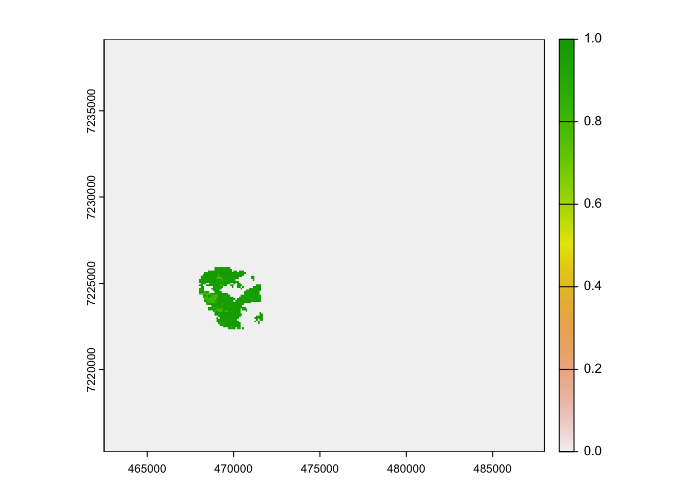
I’ll use these rasters to determine which resource units experienced stand-replacing fire5, and use those resource unit IDs to filter the sapling and tree data.
5 Which I can now define more specifically as diedStemFrac = 1
Note
An aside: this run is a spin-up simulation - I ran iLand, initializing forests from an empty landscape6 in year 0, and simulated forest growth and fire over 300 years. This seems to be the sweet spot for simulation runs - at year 300, it’s a landscape full of a mix of mature, regenerating and recently burned stands, just as we’d observe in real life. Since fires that occur early in the spin-up inherently burn young stands, it’s not terribly representative of the relationship between height and age in regrowth that I want to eventually compare to the herbivore-impacted relationship. So, I’ll filter to just the last 100 years of the simulation.
6 An aside to the aside (meta!!) - it’s an empty landscape in the sense that there are no trees in year 0, but I do initialize using a soil organic layer that varies heterogeneously across the landscape. This isn’t just to represent real life for real life’s sake - initializing from truly empty (truly bare ground) causes totally different patterns of forests. As has been shown in decades of work in Alaska by Jill Johnstone and others, soil organic layer filters forest community composition in really critical ways, allowing spruce to outcompete species like birch and aspen which can’t persist in thick soil or moss layers for as long.
Note
Question: what determines the initial heterogeneity in the SOL when initiating from bare ground using the permafrost module? (technically it’s the moss layer heterogeneity in year 0 that introduces the SOL heterogeneity in year 1 - where do those initial values come from?)
# filtering to last 100 years of fire
fire100 <- fire %>%
filter(year >200)
length(unique(fire100$fireId)) # How many fires in the last 100 years?[1] 9 # dropping layers from fire raster
fire_maps100 <- subset(fire_maps,
paste0("dead_", fire100$fireId))A quick (haha) aside: Reburns
you can take the girl out of the Reburn PhD, but you can’t take the Reburn PhD out of the girl
7 what makes it narrow is the historic fire return interval for this system was somewhere between 100-300 years (Kelly et al. 2013)
Kelly, Ryan, Melissa L. Chipman, Philip E. Higuera, Ivanka Stefanova, Linda B. Brubaker, and Feng Sheng Hu. 2013. “Recent Burning of Boreal Forests Exceeds Fire Regime Limits of the Past 10,000 Years.” Proceedings of the National Academy of Sciences 110 (32): 13055–60. https://doi.org/10.1073/pnas.1305069110.
Even within the relatively narrow window of 100 years7, reburning occurs within the model! Here’s the footprint of all fires in the last 100 years of the spin up - you can see there’s some considerable overlap, or reburning.
# setting background to NA to make transparent
fire_mapsNA <- subst(fire_maps100, 0, NA) # need to do this anyways but now it'll let us stack
plot(fire_mapsNA[[1]])
plot(fire_mapsNA[[2]], add = TRUE, legend = FALSE)
plot(fire_mapsNA[[3]], add = TRUE, legend = FALSE)
plot(fire_mapsNA[[4]], add = TRUE, legend = FALSE)
plot(fire_mapsNA[[5]], add = TRUE, legend = FALSE)
plot(fire_mapsNA[[6]], add = TRUE, legend = FALSE)
plot(fire_mapsNA[[7]], add = TRUE, legend = FALSE)
plot(fire_mapsNA[[8]], add = TRUE, legend = FALSE)
plot(fire_mapsNA[[9]], add = TRUE, legend = FALSE)
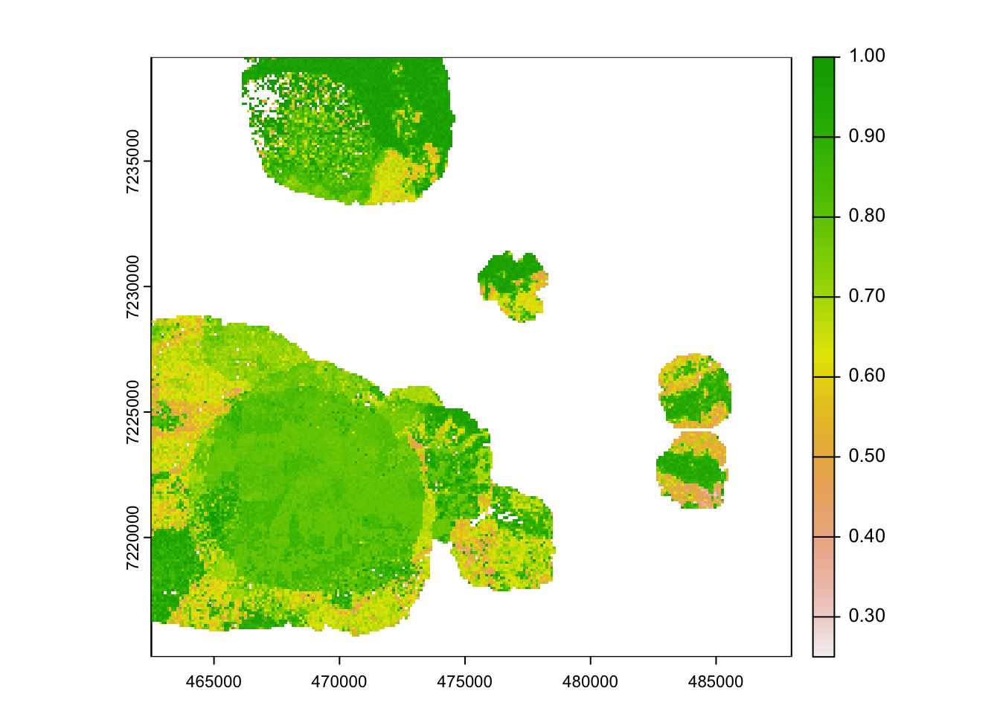
Determining overlap between rasters using the terra package
Since for this analysis I’m interested in the relationship between height and age, I’ll need to filter out stands that burned shortly8 after preceding fires - a disturbance pattern which would definitely impact age-height relationships. I’ll need to figure out where the overlaps actually occur, so I can exclude the corresponding resource units from the sapling and tree data later. I’ll do this process in two ways: 1) by looking at the physical overlap between the entirety of the fire perimeters, 2) by looking only at the overlap between high severity fires.
8 Typically, “short-interval” fire in the boreal is defined as 50 years or less between fires (Buma et al. 2022). Since I’m looking across a window of 100 years, I’m assuming everything that reburns in that 100 years is “short-interval” - I haven’t looked to see if there’s resource units that burn in year 1 and reburn in year 99, and maybe I’ll do that down the line, but right now I don’t want to bother.
Buma, B., K. Hayes, S. Weiss, and M. Lucash. 2022. “Short-Interval Fires Increasing in the Alaskan Boreal Forest as Fire Self-Regulation Decays Across Forest Types.” Scientific Reports 12 (1): 4901. https://doi.org/10.1038/s41598-022-08912-8.
The intersect() function in terra is useful for checking overlap, but only takes two rasters at a time:
overlap <- terra::intersect(fire_mapsNA[[1]],
fire_mapsNA[[2]])
plot(overlap)
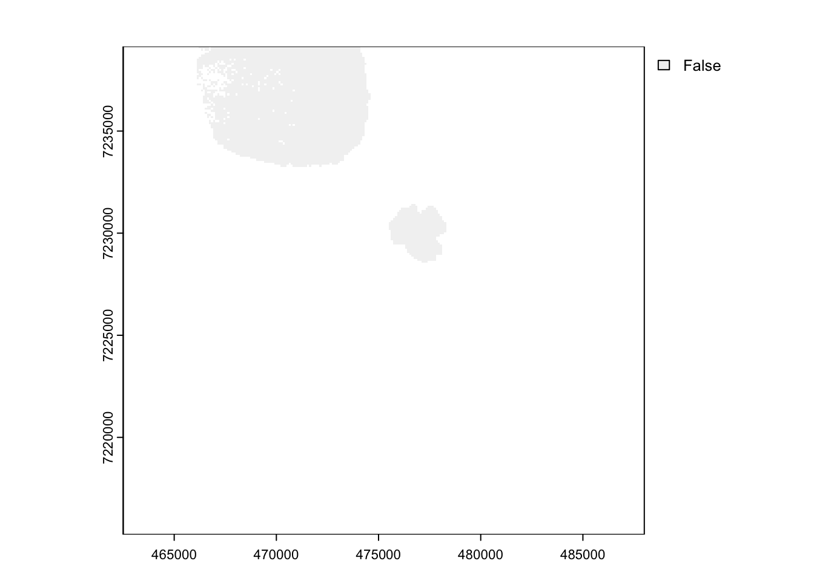
Turns out, the best way I’ve found to quickly check which rasters overlap actually involves terra’s mosaic() function:
# split all the layers into a list
mapList <- terra::split(fire_mapsNA, 1:nlyr(fire_mapsNA))
# turn list into SpatRaster Collection
mapSPC <- terra::sprc(mapList)
# merge values across layers
reburn <- terra::mosaic(mapSPC, fun = "sum") # can apply a number of functions (mean, etc)
plot(reburn)
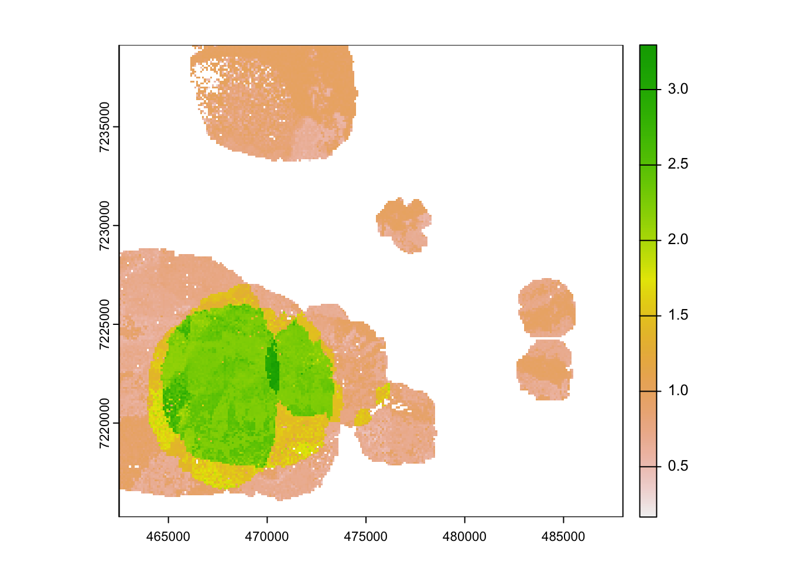
Yay!! Okay!! Now, if I set all the values of the layers to 1, I’ll end up with a raster of number of fires.
perim <- fire_maps100 > 0 # exclude unburned values
# setting all values to 1 regardless of diedStemFrac
perim <- subst(perim, TRUE, 1, others = NA) # everything else NA# split all the layers into a list
perimList <- terra::split(perim, 1:nlyr(perim))
# turn list into SpatRaster Collection
perimSPC <- terra::sprc(perimList)
# merge values across layers
nFire <- terra::mosaic(perimSPC, fun = "sum")
plot(nFire)
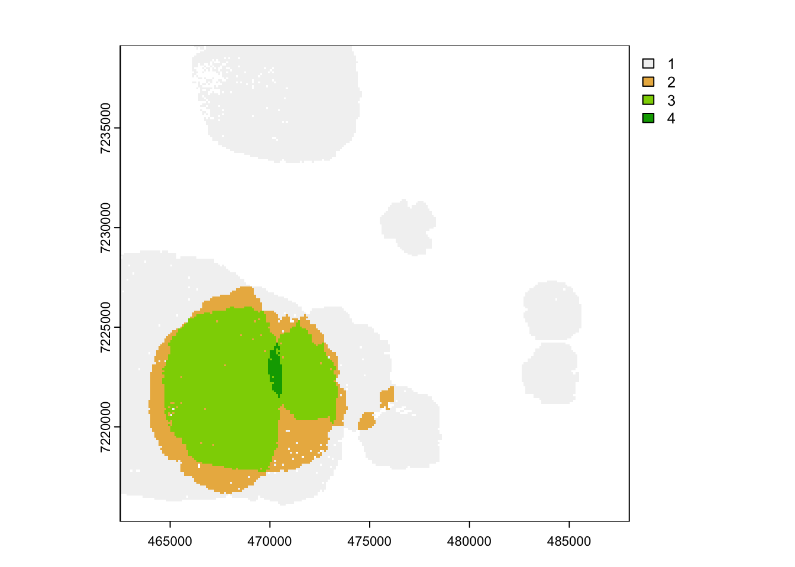
yay!! Now I can filter by the value of nFire to get the specific resource units that burned and eventually exclude them for the analysis.
iLand Reburn trends
A few more exploratory tangential questions since we’re here:
How much of the landscape burned once?
nfire1 <- subst(nFire, 1, 1, others = NA)
plot(nfire1)
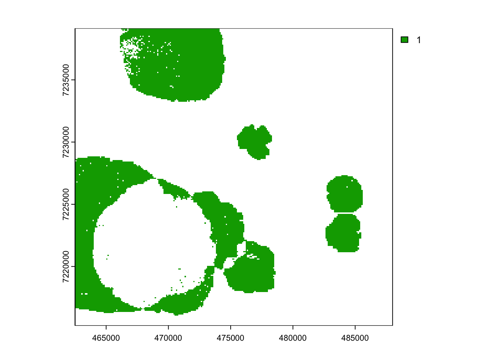
# what RID burned once?
nfire1rid <- as.data.frame(mask(env.grid, nfire1))
# how many unique resource units are there?
domain <- ncell(env.grid) # dimensions are 239 by 255
# how many resource units burned once?
length(unique(nfire1rid$env.grid)) [1] 13300# so, what %?
round((length(unique(nfire1rid$env.grid)) / domain) *100, 1)[1] 21.8How much burned twice?
nfire2 <- subst(nFire, 2, 1, others = NA)
plot(nfire2)
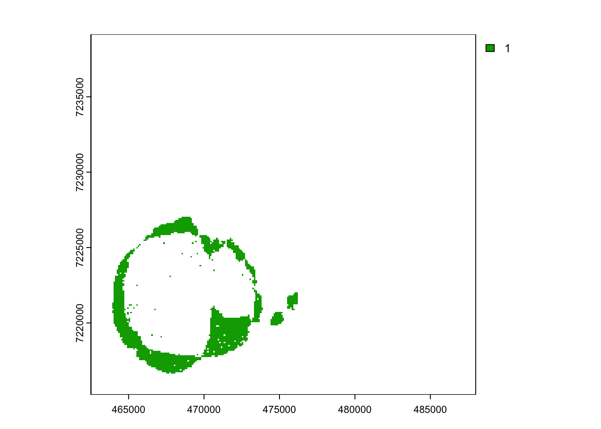
# what RID burned twice?
nfire2rid <- as.data.frame(mask(env.grid, nfire2))
# so, what %?
round((length(unique(nfire2rid$env.grid)) / domain) *100, 1)[1] 3.8How much burned three times?
nfire3 <- subst(nFire, 3, 1, others = NA)
plot(nfire3)
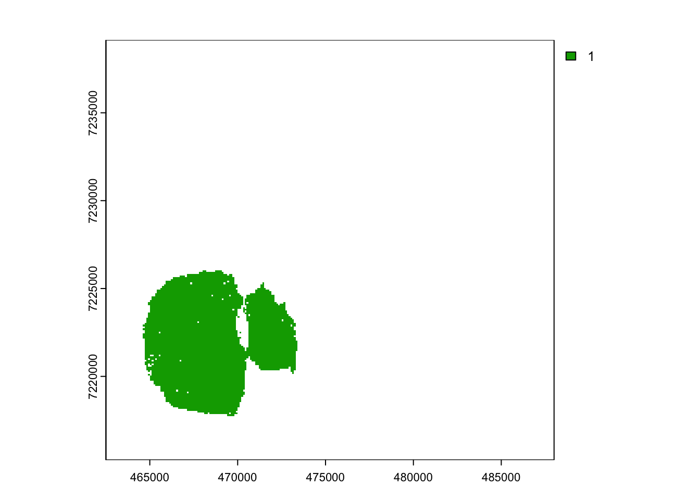
# what RID burned thrice?
nfire3rid <- as.data.frame(mask(env.grid, nfire3))
# so, what %?
round((length(unique(nfire3rid$env.grid)) / domain) *100, 1)[1] 8.2How does reburning in iLand compare to reburning in MTBS?
How does that compare to what we see in the real life frequency of reburning? As part of my work with reburns during my PhD, I worked on a paper with Brian Buma, Melissa Lucash and Shelby Weiss where we looked at trends in reburning across Alaska using the Monitoring Trends in Burn Severity database (MTBS) (Buma et al. 2022).
A few important differences to cover up front:
- MTBS data for Alaska covers 1984 to 2016 - so, the data captures a 32 year window instead of a 100 year one.
- We used a threshold of 2 to categorize MTBS maps of burn severity into “burned” and “unburned” classifications. I don’t remember if we tested the sensitivity of our analysis to that threshold - I’m super curious how those percentages would change if we filtered to just the cells marked as high severity by MTBS.
- I don’t remember off the top of my head how we dealt with Ecoregion / what Ecoregion CPCRW would fall into.
| Ecoregion | % Burned Total | % Burned Once | % Burned Twice | % Burned Thrice |
|---|---|---|---|---|
| Interior forested lowlands/uplands | 18.7 | 95.5 | 4.3 | 0.10 |
| Yukon Flats | 29.5 | 95.5 | 4.4 | 0.10 |
| Interior bottomlands | 21.3 | 96.4 | 3.6 | 0.05 |
| Interior highlands | 17.3 | 97.7 | 2.2 | 0.04 |
| Ogilvie Mountains | 29.2 | 99.0 | 1.0 | 0.00 |
| Overall | 19.8 | 96.2 | 3.7 | 0.10 |
Again, the reburn frequency in the 100 year interval of iLand is the following:
| Ecoregion | % Burned Total | % Burned Once | % Burned Twice | % Burned Thrice |
|---|---|---|---|---|
| iLand | 33.8 | 21.8 | 3.8 | 8.2 |
So, lower percentages than in the MTBS data.
An obviously incomplete spitball list of reasons reburning could be lower in iLand:
iLand is super stochastic? - runs vary from simulation to simulation. I can try replicating this simulation a few hundred times and averaging fire frequency across them all to see if the distribution of reburning becomes more similar to what we observe in MTBS
Uncertainty in MTBS?
Mechanisms that drive fire in iLand underestimate reburning?
What about fire severity?
Now, I can introduce one more layer: in theory, we9 often expect reburns (or fires that burn into existing fire perimeters) to occur at diminishing severity. Depending on the window between fires, fuel availability may limit combustion in reburns. Based on that logic, are there overlaps between stands that burned at high severity?
9 we, the royal fire ecologists
# filter to just stands with high severity
# cells with diedStemsFrac = 1
fire_mapsHS <- subst(fire_maps100, 1, 1, others = NA)
plot(fire_mapsHS[[1]])
plot(fire_mapsHS[[2]], add = TRUE, legend = FALSE)
plot(fire_mapsHS[[3]], add = TRUE, legend = FALSE)
plot(fire_mapsHS[[4]], add = TRUE, legend = FALSE)
plot(fire_mapsHS[[5]], add = TRUE, legend = FALSE)
plot(fire_mapsHS[[6]], add = TRUE, legend = FALSE)
plot(fire_mapsHS[[7]], add = TRUE, legend = FALSE)
plot(fire_mapsHS[[8]], add = TRUE, legend = FALSE)
plot(fire_mapsHS[[9]], add = TRUE, legend = FALSE)
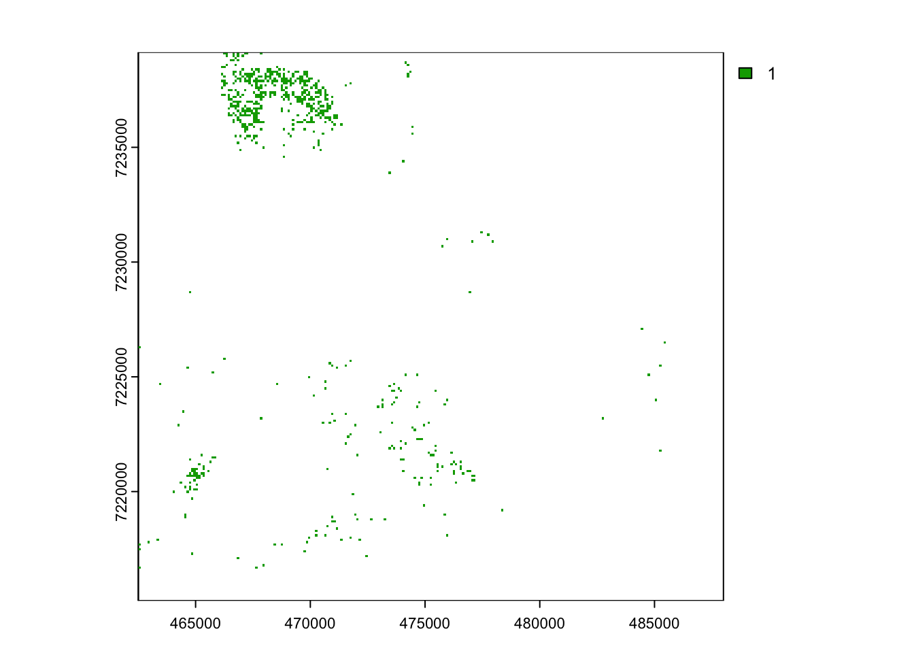
Obviously less area there. Is there any overlap?
# split all the layers into a list
hsList <- terra::split(fire_mapsHS, 1:nlyr(fire_mapsHS))
# turn list into SpatRaster Collection
hsSPC <- terra::sprc(hsList)
# merge values across layers
nFireHS <- terra::mosaic(hsSPC, fun = "sum")
plot(nFireHS)
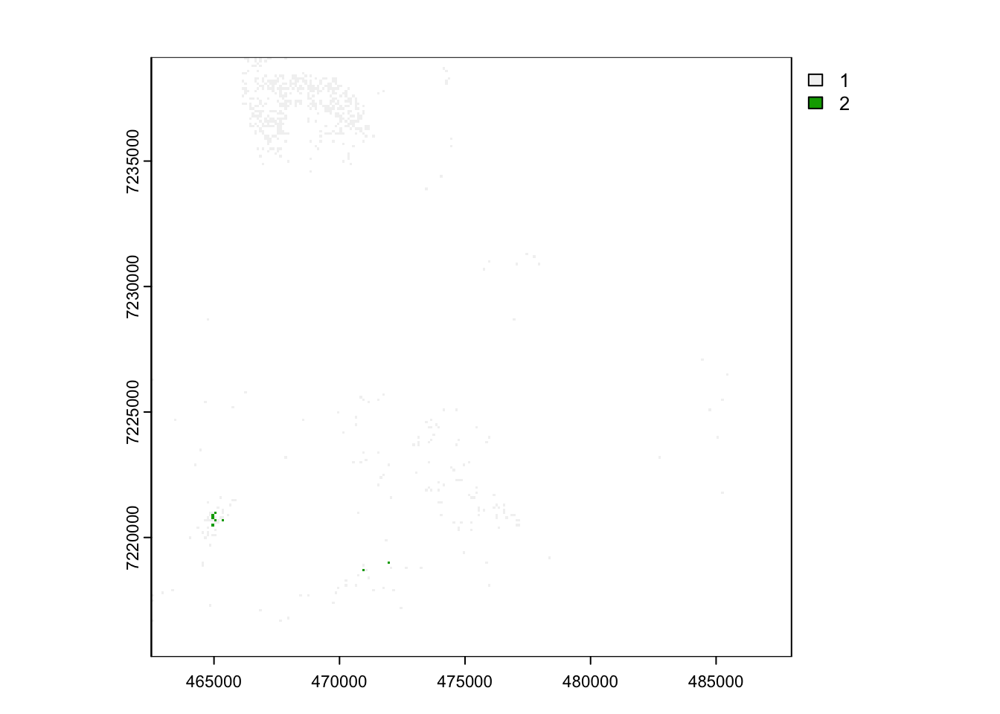
Okay. Pretty sparse, but technically there’s still resource units that burned completely both times.
nfireHS2 <- subst(nFireHS, 2, 1, others = NA)
plot(nfireHS2)
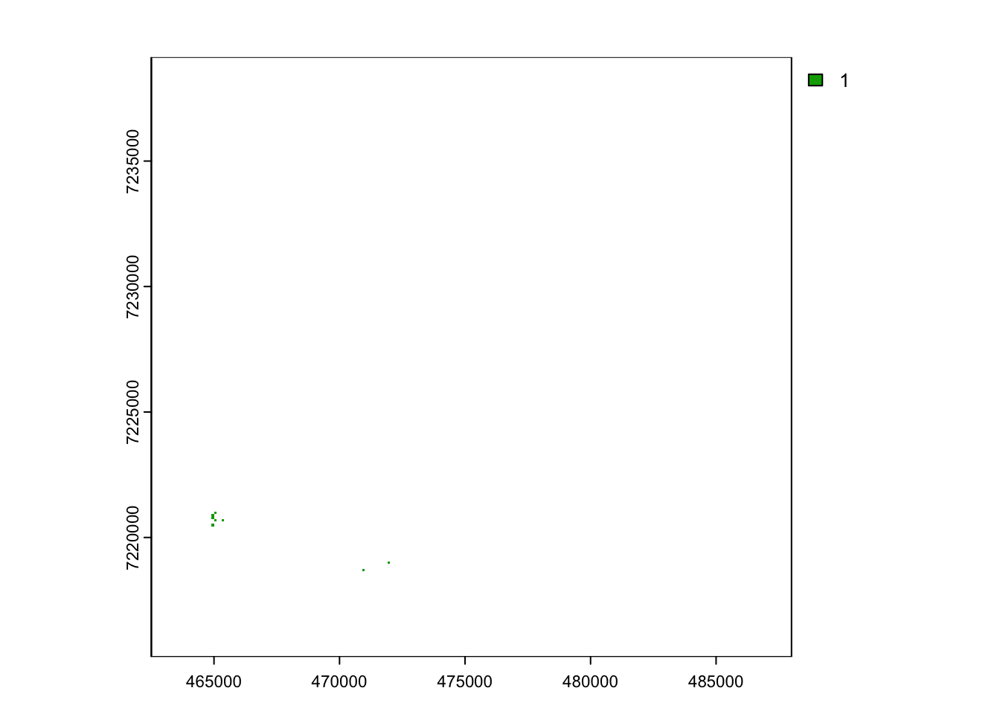
# what RID burned twice at HS?
nfireHS2rid <- as.data.frame(mask(env.grid, nfireHS2))
# how many resource units?
length(unique(nfireHS2rid$env.grid))[1] 8# so, what %?
(length(unique(nfireHS2rid$env.grid)) / domain) *100[1] 0.01312659I’m curious about the years that burned twice at high severity. What’s the interval between them?
To get back to years, I’ll have to use the list of RIDs to find fireID in the fire_maps object, and then use fireID to look in the original fire output from iLand. Essentially, retracing our steps. I’ll start by converting the object containing resource units that burned twice at high severity (nfireHS2) back to a polygon, so I can use terra’s extract() function to pull information from fire_maps.
nfireHS2poly <- terra::as.polygons(nfireHS2)
plot(nfireHS2poly)
fire_mapsHS2 <- terra::extract(fire_maps100, nfireHS2poly)
head(fire_mapsHS2) ID dead_19 dead_20 dead_21 dead_22 dead_23 dead_24 dead_25 dead_26 dead_27
1 1 0 0 0 0.9005525 0 1 0 1 0
2 1 0 0 0 0.8333333 0 1 0 1 0
3 1 0 0 0 0.8809524 0 1 0 1 0
4 1 0 0 0 0.9444444 0 1 0 1 0
5 1 0 0 0 0.8918919 0 1 0 1 0
6 1 0 0 0 0.9545454 0 1 0 1 0# drop ID column
fire_mapsHS2 <- fire_mapsHS2 %>%
select(!ID) %>%
select(where(~ any(. != 0)))
knitr::kable(fire_mapsHS2)| dead_22 | dead_24 | dead_26 |
|---|---|---|
| 0.9005525 | 1 | 1 |
| 0.8333333 | 1 | 1 |
| 0.8809524 | 1 | 1 |
| 0.9444444 | 1 | 1 |
| 0.8918919 | 1 | 1 |
| 0.9545454 | 1 | 1 |
| 0.0000000 | 1 | 1 |
| 0.0000000 | 1 | 1 |
# 18 reburned 19
# 18 reburned 20
# 23 reburned 27
# 25 reburned 27
fireHS2 <- fire %>%
select(c(year, fireId)) %>%
filter(fireId %in% as.numeric(str_sub(colnames(fire_mapsHS2), -2)))
fireHS2# A tibble: 3 × 2
year fireId
<int> <int>
1 229 22
2 273 24
3 290 26Now, I want to use the row id numbers from the fire_mapsHS object to filter out rows in the sapling and stand output that burned at high severity. The following code loops through each of the fire maps, extracting the resource unit ID numbers, the fire ID and the fire year (which come from the default fire output) and compiling into a dataframe, fireID. What fraction of the landscape burned at high severity? (ie, how many resource units?)
fireID <- data.frame()
for (i in 1:nrow(fire100)) {
# Skip fires that burned nothing
if (fire100$area_m2[i] > 0) {
mask <- fire_mapsHS[[paste0("dead_", fire100$fireId[i])]]
# Use the mask to extract the rids for burned grids
burned_rids <- as.data.frame(mask(env.grid, mask))
burned_rids= burned_rids%>%filter(!is.na(env.grid))
burned_rids$year=fire100$year[i]
burned_rids$fireID = fire100$fireId[i]
}
fireID = rbind(fireID, burned_rids)
}
fireID = fireID %>% rename("rid" = env.grid, "fire.year" = year)# how many unique resource units are there?
domain <- ncell(env.grid) # dimensions are 239 by 255
# how many resource units burned at HS?
length(unique(fireID$rid)) [1] 622# so, what %?
(length(unique(fireID$rid)) / domain) *100[1] 1.020592So, only about 1% of the landscape burned at high severity across the 100 year simulation window. (Though, technically that would be an underestimate since it doesn’t take into account the resource units that reburned).
Session Info
sessionInfo()R version 4.3.3 (2024-02-29)
Platform: aarch64-apple-darwin20 (64-bit)
Running under: macOS Sonoma 14.0
Matrix products: default
BLAS: /Library/Frameworks/R.framework/Versions/4.3-arm64/Resources/lib/libRblas.0.dylib
LAPACK: /Library/Frameworks/R.framework/Versions/4.3-arm64/Resources/lib/libRlapack.dylib; LAPACK version 3.11.0
locale:
[1] en_US.UTF-8/en_US.UTF-8/en_US.UTF-8/C/en_US.UTF-8/en_US.UTF-8
time zone: America/Chicago
tzcode source: internal
attached base packages:
[1] stats graphics grDevices utils datasets methods base
other attached packages:
[1] kableExtra_1.4.0 cowplot_1.1.3 terra_1.7-55 lubridate_1.9.3
[5] forcats_1.0.0 stringr_1.5.1 dplyr_1.1.4 purrr_1.0.2
[9] readr_2.1.5 tidyr_1.3.1 tibble_3.2.1 ggplot2_3.5.0
[13] tidyverse_2.0.0
loaded via a namespace (and not attached):
[1] utf8_1.2.4 generics_0.1.3 xml2_1.3.6 stringi_1.8.3
[5] hms_1.1.3 digest_0.6.35 magrittr_2.0.3 evaluate_0.23
[9] grid_4.3.3 timechange_0.3.0 fastmap_1.1.1 jsonlite_1.8.8
[13] fansi_1.0.6 viridisLite_0.4.2 scales_1.3.0 codetools_0.2-19
[17] cli_3.6.2 rlang_1.1.3 munsell_0.5.0 withr_3.0.0
[21] yaml_2.3.8 tools_4.3.3 tzdb_0.4.0 colorspace_2.1-0
[25] vctrs_0.6.5 R6_2.5.1 lifecycle_1.0.4 htmlwidgets_1.6.4
[29] pkgconfig_2.0.3 pillar_1.9.0 gtable_0.3.4 glue_1.7.0
[33] Rcpp_1.0.12 systemfonts_1.0.6 highr_0.10 xfun_0.43
[37] tidyselect_1.2.1 rstudioapi_0.16.0 knitr_1.45 htmltools_0.5.8
[41] rmarkdown_2.26 svglite_2.1.3 compiler_4.3.3